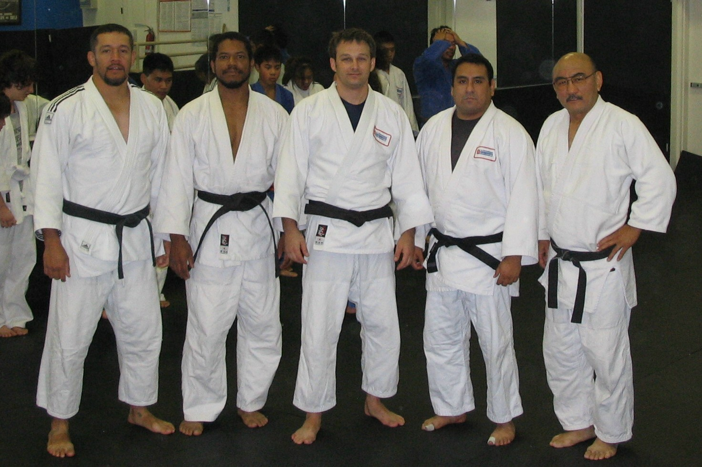
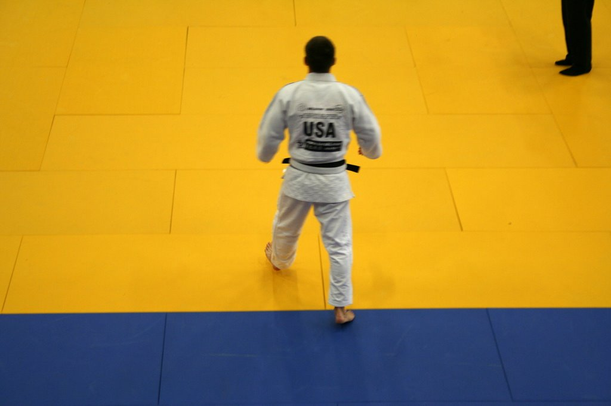

Where we come from
History
Team Sacramento Judo grew one class at a time - here's the short version.
-
1989
Founded on a borrowed mat
Team Sacramento Judo started small - a handful of students and one coach willing to teach in whatever space had room for a tatami.
-
2007
Building the coaching bench
A growing group of black belts took on instructor roles, splitting their time between teaching beginners and training for their own competitions.
-
2008
Representing the club on the world stage
Club members began competing internationally, carrying the Team Sacramento name to tournaments outside the U.S.
-
Today
A full program, every age
What started as one class has grown into a full curriculum spanning Little Champions through adult competition judo.

The coaching staff, 2007

Competing at Worlds, 2008
Meet the people teaching today
Several of the coaches in this club's history are still on the mat.